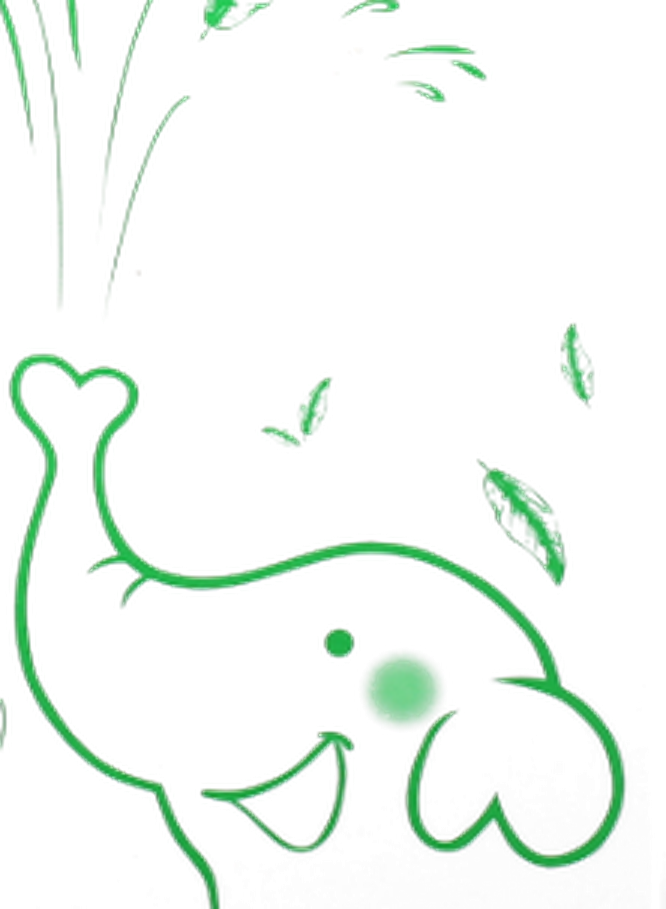

HĂM DAVùng tã và các nếp gấp

● DẤU HIỆU NHẬN BIẾT
Đỏ, rát ở vùng mặc tã do nước tiểu và phân, hoặc trong các ngấn do mồ hôi đọng và da cọ vào nhau.
Vùng tãNgấn cổNáchBẹn
5 CẤP ĐỘ HĂM (ảnh tư liệu công ty)


BỘ SẢN PHẨM VẤN ĐỀ
 +
+
Tắm gội Elemis (150.000đ)
+ Kem bôi Elemis (115.000đ)
+ Kem bôi Elemis (115.000đ)

Bán thêm khi khách muốn chăm kỹ hơn: Dầu massage Oriky (135.000đ)
⚠ KHUYÊN ĐI KHÁM, ĐỪNG BÁN — KHI
Da đã trợt, chảy dịch, có mụn mủ, mùi hôi rõ hoặc lan rộng nhanh.
→ Khuyên mẹ đưa bé đi khám trước, dùng sản phẩm duy trì sau.

Sell-out kit theo vấn đề da bé · Công ty TNHH Dược Khoa Xanh
1
LÀM SẠCHtắm & vệ sinh khi thay tãTắm gội thảo dược Elemis Từ sơ sinh
200 / 350 / 500ml · 150.000 / 210.000 / 275.000đ


Papain (đu đủ) · Acid citric (chanh)
Vùng tã, nếp gấp đọng nhiều mồ hôi và tế bào chết. Papain cắt liên kết giữ tế bào chết → bong nhẹ, không phải chà xát vùng da đang đỏ; acid citric làm sạch nhẹ vảy trên da.


EGCG · Citral · Elsholtzia ketone · Cineol
EGCG, citral ức chế vi khuẩn thường trú; elsholtzia ketone, cineol phá màng tế bào vi khuẩn khi tiếp xúc. Vùng hăm tổn thương, ẩm và kín → vi khuẩn phát triển mạnh hơn da lành.
★ HƠN ĐỐI THỦ — vs Dr.Papie (230ml), Kutieskin (200ml): DKX có thêm dịch chiết chanh và tinh dầu mùi.
2
XỬ LÝ VẤN ĐỀchắn ẩm · giảm ma sát · làm dịuKem bôi da Elemis Từ sơ sinh
Tuýp 30g · 115.000đ

Kẽm oxyd nano 2%
Hạt nano liên kết thành màng mỏng phủ kín da. Vùng tã: ngăn nước tiểu, phân, hơi ẩm chạm vào da. Nếp gấp: vừa chắn ẩm vừa giảm ma sát giữa hai mặt da. Bôi ngay khi thay tã, kể cả khi da chưa đỏ, để phòng ngừa.

Asiaticoside · Acid asiatic (rau má)
Da kích ứng tiết chất gây viêm → mạch giãn (đỏ), thần kinh nhạy (rát). Hai hoạt chất này giảm chất gây viêm → bớt đỏ, bớt rát sau khi thoa.

Cineol · Long não (tinh dầu ngải cứu)
Bay hơi tạo cảm giác mát, đồng thời ức chế vi khuẩn tại vùng da đang tổn thương.
★ HƠN ĐỐI THỦ — vs Bepanthen Balm (30g), Sudocrem (60g): DKX kết hợp kẽm oxyd nano + rau má + ngải cứu; công bố thêm dùng cho “da bị bỏng do gió/nắng” — không thấy ở Bepanthen/Sudocrem.
3
NUÔI DƯỠNG & BẢO VỆgiữ ẩm · hàng rào daKem bôi da Elemis

Aquaxyl (xylitylglucoside + anhydroxylitol)
Xylitylglucoside kích thích da tự tạo glycosaminoglycan (chất giữ nước tự nhiên); anhydroxylitol củng cố hàng rào ngoài cùng → nước khó thoát, da tự giữ ẩm từ bên trong. Da nếp gấp ẩm ngoài mà thiếu ẩm trong → dễ nứt khi cọ xát.
Tắm gội thảo dược Elemis

Chlorophyllin (diệp lục tố) · EGCG (chè xanh)
Trung hoà gốc tự do trên da; chlorophyllin còn hút mùi mồ hôi → giảm mùi hôi đọng ở ngấn cổ, nách.
Dầu massage Oriky Từ sơ sinh
Chai 60ml · 135.000đ


Acid oleic (hạnh nhân) · Acid linoleic (hạt nho) · Squalene (cám gạo)
Là các acid béo cùng loại với lớp lipid tự nhiên của da → lấp vào chỗ hàng rào lipid bị thiếu hụt, khoá nước lại trong da.
★ HƠN ĐỐI THỦ — vs Johnson's Baby Oil: dùng dầu khoáng. vs Chicco: chỉ có cám gạo đơn lẻ. Oriky kết hợp 3 dầu thực vật: cám gạo + hạnh nhân + hạt nho.
CÁCH DÙNG
- Tắm: pha 5ml : 5 lít nước 36–37°C. Mở các nếp gấp ra rửa kỹ, lau thật khô rồi mới mặc đồ / đóng tã.
- Vệ sinh khi thay tã: pha 2ml : 2 lít, nhất là khi bé đi nặng.
- Kem bôi: thoa lớp mỏng lên vùng đã lau khô. Vùng tã: mỗi lần thay tã, kể cả khi da chưa đỏ. Vùng ngấn: ngày 2–3 lần.